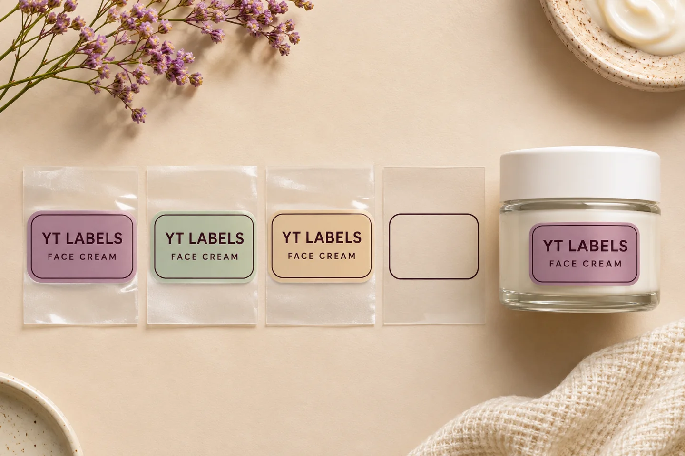

Separate assets from production work
Ask what each original charge covered. A physical cutting tool, a decoration tool, a printing plate and a digital artwork file should not be grouped under one unexplained tooling label. Preparation and machine setup may be activities rather than transferable objects.
Request the relevant asset reference where one exists. Connect it to the artwork revision, dimensions and production route. If the supplier uses an internal tool number, record that cross-reference so a later enquiry can identify the same item.
The digital-versus-flexo quotation guide compares process scope. Here the narrower decision is what existing job assets can be reused and which current services or changes the new quotation actually includes.
Same-size labels: ask which charges can be shared
For a first order with several cosmetic label designs, ask for each charge to show both its basis and the designs it covers. The same finished dimensions give the printer a reason to check for a shared cutting tool. They do not settle whether artwork checks, plates, decoration setup or packing can be shared. A combined quote is useful once you can trace every line to the design or production step it buys.
Start with the current artwork ID, shape and dieline revision for every design. Include the stock and finish, quantity per artwork and required roll or sheet format. Ask the printer to identify a compatible tool or explain why a new one is needed. A supplier may price a digital route without a separate plate line; confirm which other preparation and converting work is included. If you are still choosing a print process, compare the two production routes on the same specification first.

| Line to reconcile | What to ask the printer to name | What to check before approval |
|---|---|---|
| Cutting die or cutting setup | The compatible tool or proposed cut route; all covered design IDs. | Confirm the actual outline and proposed layout. If there are two charges, check what differs between the routes or tools. |
| Artwork, proof or plate | Whether the charge is included, per file, per plate, or for the whole job; its quantity. | List exactly which artwork versions will be proofed. If a plate is quoted, ask which designs or print elements it covers. |
| Decoration and setup | The affected designs, any specific tool, and which setup or changeover the fee covers. | Check decoration coverage by design. A foil logo on one version should be distinguished from cutting the shape used by the whole range. |
| Repeat after an artwork change | Which charge could recur if one design changes; any assumptions about tool retention or reuse. | Record what the current price confirms. Keep any future charge or right to reuse marked unconfirmed unless agreed in writing. |
Worked example: Three hypothetical face cream designs share one approved contour; only design C requires foil. A quotation shows one cutting die covering A, B and C, artwork review as three separate files, and a foil setup for C. That structure can be consistent: one cutting asset, three files to check and one distinct finishing operation. If the supplier lists a second die with no design reference, ask which outline or converting step needs it before accepting the total.
For each proposal, multiply any separately charged unit fee by the confirmed number of units, then add each applicable line once. Leave charges marked included inside the price where they already appear. Compare the same quantities and construction per design, and identify fees that apply only to the first order. If a quantity minimum is still open, settle it using the multi-design quantity worksheet. Hold the quote for clarification when a fee has no stated basis, a required design is missing, or two totals cover different finishes or quantities.
Confirm custody and written terms
Ask who holds the asset, whether it remains available and what the existing agreement says about storage, maintenance, reuse and transfer. Read the actual terms or request clarification from the parties responsible for them. This article does not interpret a disputed contract or assign ownership.
Avoid assuming that a file on the brand's computer and an asset in a supplier's production system are the same thing. Likewise, having a copy of a dieline does not establish access to a physical cutting tool made for a particular arrangement.
If ownership or release rights are important to supplier selection, resolve them before ordering. Keep the agreed terms with the job record. A future change of printer is a poor time to discover that everyone attached a different meaning to the first tooling invoice.
Ask what changed in the proposed repeat
Compare the current job with the asset's identified use. Dimensions, artwork features, decorative layers, material or production route can create questions about continued suitability. The technical supplier should determine whether the asset can be reused, needs modification or must be replaced.
Do not infer incompatibility from a new revision number alone. A wording change may affect one production element while leaving another unchanged. Equally, an unchanged logo does not prove that a different size or converting arrangement can use the old tool.
The reorder approval guide locks the intended specification. Use that comparison as the input to the asset review. Reuse should refer to the actual approved job, not a vague instruction to repeat what was printed last year.
Build an asset-and-charge record
The following worksheet helps obtain an answerable quotation. It is not a legal ownership document or a promise that any asset can be transferred.
| Field | Information to obtain | Purchasing use |
|---|---|---|
| Asset or activity | Cut die, print plate, decoration tool, file or setup work | Separates unlike charges |
| Reference | Supplier ID and related job/artwork | Identifies what may be reused |
| Custody | Current holder and availability | Establishes where the asset is |
| Terms | Actual agreed reuse, storage or transfer provisions | Avoids assumptions about rights |
| Compatibility | Proposed job and supplier's technical response | Defines whether reuse is supported |
| Current charge | Itemised new work and quotation scope | Explains what is being purchased now |
| Release | Accepted proposal and unresolved conditions | Connects agreement to the repeat order |
Start with the original invoice and job records. Ask the supplier to map charges to identified assets or activities, then review the proposed job changes. Obtain a current itemised response and reconcile any apparent duplicate before approving the quotation.
If a charge remains unexplained, ask what work it covers and what evidence supports the scope. Do not accuse the supplier of double billing solely because two lines contain the word setup. Equally, a familiar description should not prevent purchasing from requesting a clear explanation.
Different repeat orders can have different justified costs
A hypothetical unchanged job may have an identified available tool and agreed reuse terms. The supplier can explain which preparation or production work still applies and which asset charge does not recur. That makes the quotation assessable without assuming the entire repeat must be setup-free.
A different order may change the label shape or decoration arrangement. Some assets may remain usable while others require review. Asking for an asset-by-asset explanation is more precise than negotiating one undifferentiated tooling amount.
Where another supplier is being considered, obtain its technical requirements and the actual transfer conditions before assuming the existing assets will move successfully. A promised saving is premature until the receiving route and available rights are clear.
For cosmetic label orders, send the current artwork, dimensions, quantities by design, the finish for each design and any relevant tooling or setup lines. Include the prior job reference for a repeat order. Identify what changed and what needs clarification. The inquiry form prepares a message; send records through email or WhatsApp. Ask for a current proposal that separates reusable assets from the work required for this order.